ATENCIÓN MÉDICA
TECNOLOGÍA & DIAGNÓSTICO
ENFOQUE EN PREVENCIÓN
Somos una Asociación Civil comprometida con el bienestar de nuestra comunidad. Nuestro principal objetivo es acercar servicios esenciales que impacten positivamente en la calidad de vida de las personas, especialmente aquellas en situación de vulnerabilidad.
Nuestra misión es proporcionar servicios de salud integrales, personalizados y de alta calidad, mediante un equipo de profesionales comprometidos con la excelencia y la atención al paciente. Nos esforzamos por ser un referente en la salud, mediante la innovación, la investigación y la educación, para mejorar la salud y el bienestar de nuestra comunidad.
Ser líderes en la prestación de servicios de salud de alta calidad, innovadores y accesibles, mejorando la calidad de vida de nuestros pacientes y contribuyendo al bienestar.
Cardiotacina es un suplemento herbal formulado para apoyar la salud cardiovascular, mejorar la circulación sanguínea y reducir los factores de riesgo asociados a enfermedades del corazón, como la hipertensión y el colesterol alto. Esta fórmula única combina extractos de plantas conocidas por sus propiedades, para optimizar la función celular. Ayuda a fortalecer el músculo cardiaco, incrementa el bombeo en el flujo sanguíneo, estimula la circulación y previene arritmias y regula la presión arterial. Ingredientes: Crataegus oxyacantha (15%), Allium sativum (10%), Olea europaea (12%), Arctium lappa (8%), Panax ginseng (11%), Withania somnifera (14%), Valeriana officinalis (9%), Capsicum annuum (13%) y Coenzima Q10 (8%).
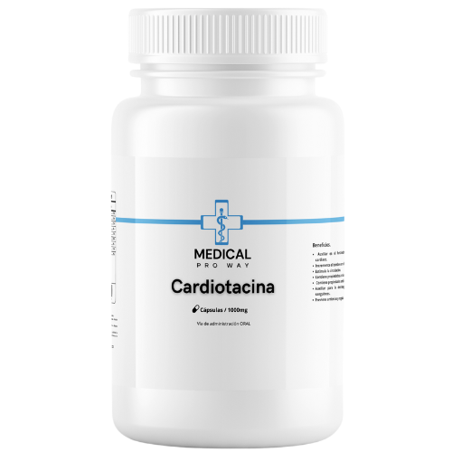
La Narodrina es un suplemento alimenticio diseñado para ayudar a reducir la presión arterial causada por el estrés y mejorar la salud de los vasos sanguíneos. Además, reduce la inflamación y promueve la relajación mental, mejorando el sueño. Actúa como un sedante suave para calmar el sistema nervioso. Ingredientes: Lavandula angustifolia (36.98%), Passiflora incarnata (9.43%), Chamaemelum nobile (25.76%), Tilia cordata (10.23%), Mentha piperita (11.67%), Rhodiola rosea (3.13%), Bacopa monnieri (2.80%)
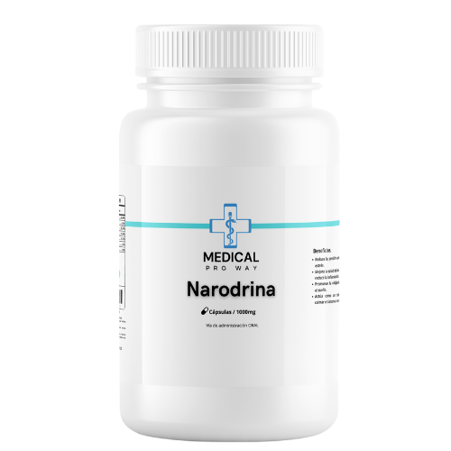
La fórmula de Histamina se compone de una combinación cuidadosamente seleccionada de extractos vegetales, diseñada para apoyar la salud cardiovascular. Esta fórmula integral promueve la regeneración del tejido del sistema circulatorio, la desintoxicación y la eliminación de líquidos en exceso, mejorando la circulación sanguínea, el transporte de nutrientes y la coagulación. Ingredientes: Schisandra chinensis (8%), Taraxacum officinale (15%), Peumus boldus (16%), Curcuma longa (12%), Cynara scolymus (8%), Glycyrrhiza glabra (11%), Azadirachta indica (9%), Cichorium intybus (13%) y Urtica dioica (8%).
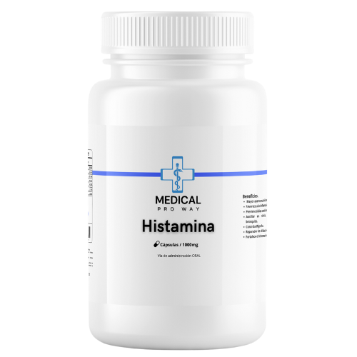
Teristacin es un suplemento alimenticio diseñado para mejorar la salud al reducir la inflamación en los vasos sanguíneos, regular los niveles de lípidos y auxiliar en la eliminación de grasas en la sangre, disminuyendo así el riesgo de enfermedades coronarias. Además, estimula la circulación sanguínea y mejora la elasticidad de los vasos, promoviendo un sistema cardiovascular saludable. Contiene ingredientes como Zingiber officinale (2.70%), Silybum marianum (1.89%), Trigonella foenum-graecum (19.28%), Medicago sativa (39.86%) y Phalaris canariensis (36.26%).
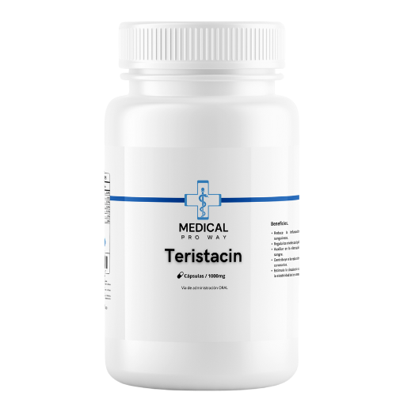
El suplemento OMEGA-3 está diseñado para apoyar la salud cardiovascular y reducir los factores de riesgo asociados a enfermedades del corazón. Ayuda a relajar los vasos sanguíneos, estabiliza los impulsos eléctricos en el corazón y mejora la función endotelial. Inhibe la agregación plaquetaria, reduciendo el riesgo de formación de trombos y previene el endurecimiento arterial. Ingredientes: EPA (10%) DHA(10%) OMEGA (80%)
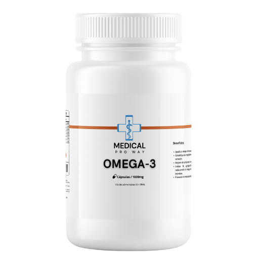
OXIGEN-O ayuda a regular la hipertensión, reduce la frecuencia de varices y frecuencia cardiaca, mejora la circulación y previene la arterioesclerosis, mareos, dolores de cabeza e insomnio. Además, previene la pesadez en las piernas e hinchazón en las manos. Ingredientes: Lavandula angustifolia (36.98%), Passiflora incarnata (9.43%), Chamaemelum nobile (25.76%), Tilia cordata (10.23%), Mentha piperita (11.67%), Rhodiola rosea (3.13%) y Bacopa monnieri (2.80%).
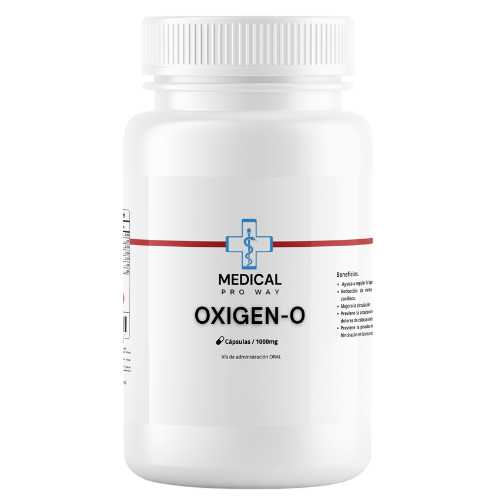
ASTHMA-PLUS es un suplemento diseñado para ayudar a aliviar los síntomas respiratorios. Auxilia en la congestión e irritación nasal, alivia la tos y previene los resfriados. También libera las vías respiratorias, ayuda a respirar sin dificultad y facilita la expulsión de toxinas. Además, limpia y fortalece los pulmones. Ingredientes: Lavandula angustifolia (36.98%), Passiflora incarnata (9.43%), Chamaemelum nobile (25.76%), Tilia cordata (10.23%), Mentha piperita (11.67%), Rhodiola rosea (3.13%) y Bacopa monnieri (2.80%).
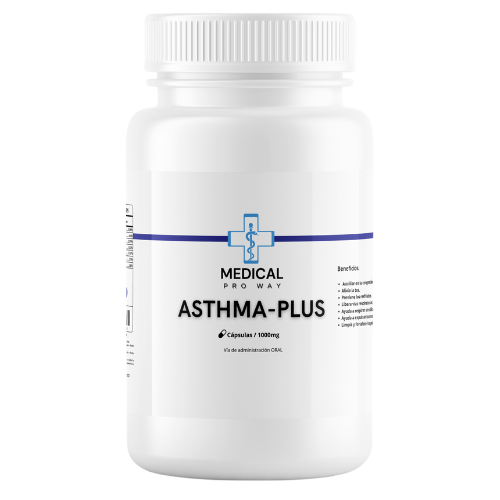
HEPATIC MAX es un suplemento diseñado para apoyar la salud cardiovascular. Ayuda a fortalecer el músculo cardiaco, incrementa el bombeo en el flujo sanguíneo y estimula la circulación. También contiene propiedades antioxidantes y antiinflamatorias, y ayuda a desintegrar coágulos sanguíneos. Además, previene arritmias y regula la presión arterial. Ingredientes: Curcuma longa (35%), Pumus boldus (15%), Cynara cardunculus (30%) y Juniperua communis (20%).
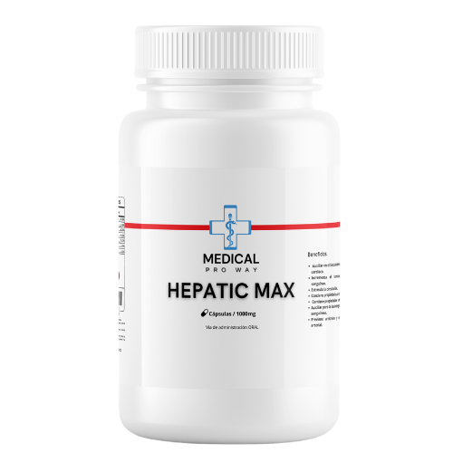
V-LIAR PLUS es un suplemento diseñado para apoyar la salud digestiva y hepática. Ayuda a eliminar cálculos biliares, disminuye cólicos biliares e inflamación de la vesícula biliar. También alivia molestias estomacales como indigestión, flatulencias y acidez. Es hepatoprotector, ayudando a la desintoxicación. Ingredientes: Lavandula angustifolia (36.98%), Passiflora incarnata (9.43%), Chamaemelum nobile (25.76%), Tilia cordata (10.23%), Mentha piperita (11.67%), Rhodiola rosea (3.13%) y Bacopa monnieri (2.80%).
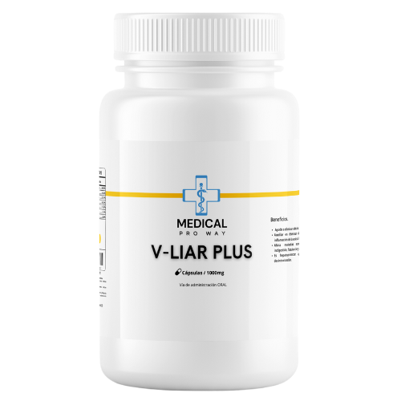
El Gastro Clean es un suplemento alimenticio diseñado para promover la salud digestiva y gastrointestinal. Ayuda a contrarrestar los ácidos gástricos, actúa como protector de la mucosa estomacal y desintoxica el colon. Además, tiene propiedades desinflamantes para el intestino y contribuye a la reconstrucción de la flora intestinal, favoreciendo un sistema digestivo equilibrado. Su fórmula incluye Oquntra filus-indica (25%), Aloe Vera (25%), Zingiber officinale (24%) y Taraxacum officinale (26%).
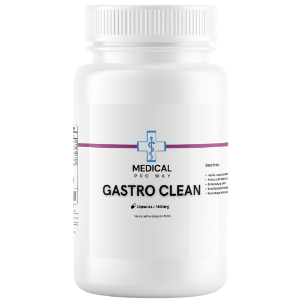
MoringMax es un suplemento alimenticio con múltiples beneficios para la salud, diseñado para ofrecer un mayor aporte nutricional y energético. Favorece la reducción de la inflamación digestiva, previene daños cardiovasculares y actúa como auxiliar en casos de rinitis, conjuntivitis y bronquitis. Además, ayuda a controlar la migraña, reparar células hepáticas y fortalecer el sistema inmunológico. Su fórmula está compuesta por Moringa oleifera (50%) y Curcuma longa (50%).
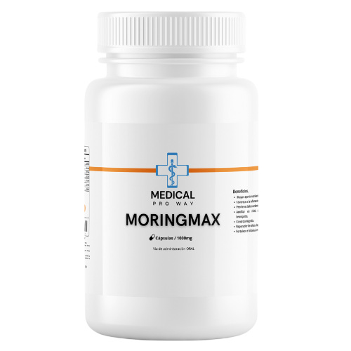
Tronamax es un suplemento alimenticio diseñado para prevenir y ayudar a expulsar la calcificación en los órganos, promoviendo un mejor funcionamiento del cuerpo. Su fórmula combina ingredientes naturales como Solidago canadensis (30%), Betula (20%), Lepidium latifolium (25%) y Equisetum arvense (25%), que trabajan en conjunto para cuidar y proteger la salud renal y urinaria.
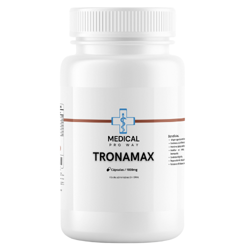
RENO PROTECT es un suplemento alimenticio formulado para apoyar la salud renal y del tracto urinario. Ayuda a combatir infecciones renales, disminuye los niveles de ácido úrico, previene infecciones en la vejiga y facilita la expulsión de toxinas. Su composición incluye Equisetum arvense (12%), Ceterach officinarum (15%), Tamariscos (10%), Serjania triqueta (8%), Arctostaphylos pungens (20%), Cabezona (5%), Guazuma ulmifolia (18%) y Gaultheria procumbens (12%).
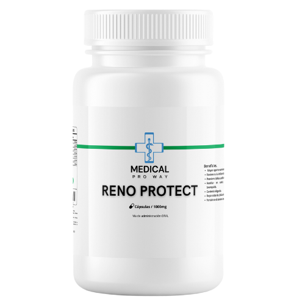
Terol Plus es un suplemento alimenticio diseñado para promover la salud cardiovascular y metabólica. Disminuye la actividad de la lipólisis, mejora el perfil lipídico, actúa como protector arterial y reduce la absorción de colesterol, favoreciendo un sistema cardiovascular saludable. Su fórmula contiene Curcuma longa (28%), Cynara scolymus (22%), Taraxacum officinale (25%) y Plantago psyllium (25%).
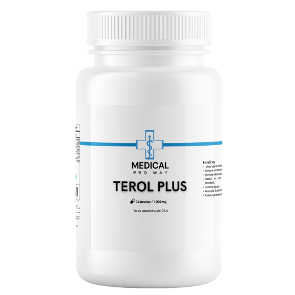
Man Plus es un suplemento alimenticio especialmente formulado para el cuidado de la salud masculina. Beneficia la glándula prostática, desinflama la vejiga y ayuda en casos de disfunción eréctil mediante la mejora de la irrigación sanguínea. También es auxiliar en la prevención y tratamiento de enfermedades prostáticas y de la vejiga, apoyando de manera natural gracias a sus ingredientes medicinales. Su fórmula contiene Equisetum arvense (28%), Alnus glutinosa (22%), Smilax aspera (25%), Serenoa repens (15%) y Buddleja cordata (10%).
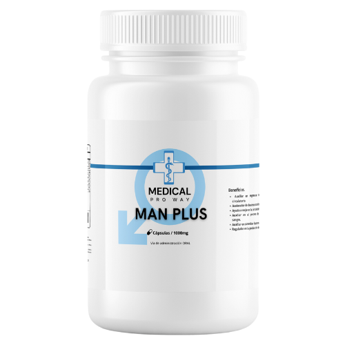
Femme Plus es un suplemento alimenticio diseñado para apoyar la salud femenina en diversas etapas y condiciones. Ayuda en el tratamiento de tumores cancerosos, la menopausia, quistes, flujo vaginal, regulación menstrual, cólicos, esterilidad, hemorragias, orina dolorosa, dolor de cintura, inflamación abdominal, úlceras, infecciones y eliminación de desechos. Su fórmula contiene Rosmarinus officinalis (20%), Toumefortia hirsutissima (15%), Foeniculum vulgare (15%), Semialarium mexicanum (20%), Amica montana (10%), Chamaemelum nobile (10%), Quercus spp (5%) y Amphipterygium adstringens (5%).
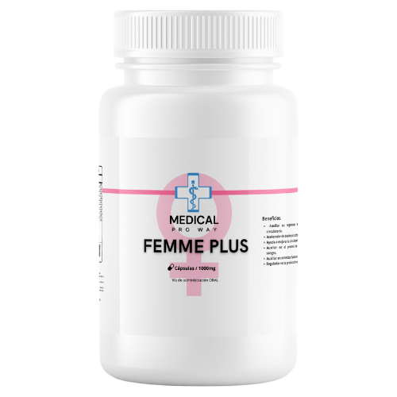
Ovari-Femme es un suplemento alimenticio formulado para apoyar la salud femenina, especialmente en el tratamiento de miomas y quistes. Actúa como auxiliar para elevar el pH y evitar flujos e infecciones, desinflama el cérvix y es útil en tratamientos de lesiones. Su fórmula contiene Oenothera biennis (28%), Primus (22%), Borago officinalis (25%) y Camellia sinensis (25%).
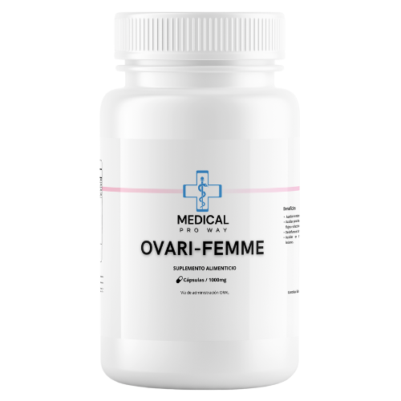
Mam-Femme es un suplemento alimenticio diseñado especialmente para apoyar la salud femenina, con énfasis en el cuidado de las glándulas mamarias y la regulación hormonal. Actúa como auxiliar en el alivio de molestias asociadas al ciclo menstrual, ayuda a equilibrar las hormonas, y favorece el bienestar general. Su fórmula contiene Cimicifuga racemosa (34%), Vitex agnus-castus (33%) y Cinnamomum verum (33%), ingredientes cuidadosamente seleccionados para proporcionar un apoyo integral a la salud femenina.
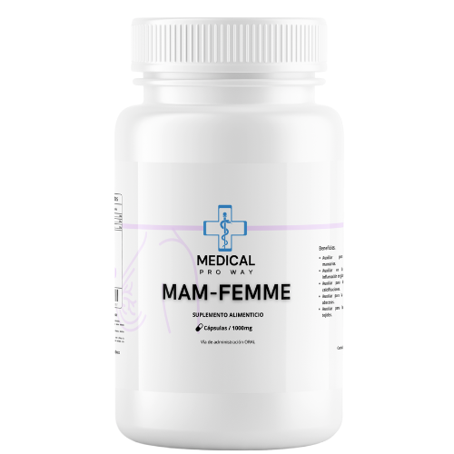
El Oseo-Flex es un suplemento alimenticio diseñado para apoyar la salud de huesos y articulaciones. Ayuda en el tratamiento de huesos, cartílagos, osteoporosis, reumatismo, artritis y desinflama las articulaciones. También previene el desgaste de cartílagos y la descalcificación. Su fórmula contiene Colágeno (30%), Glucosamina (20%), Calcio (25%), Metilsulfonilmetano (15%) y Condroitina (10%).
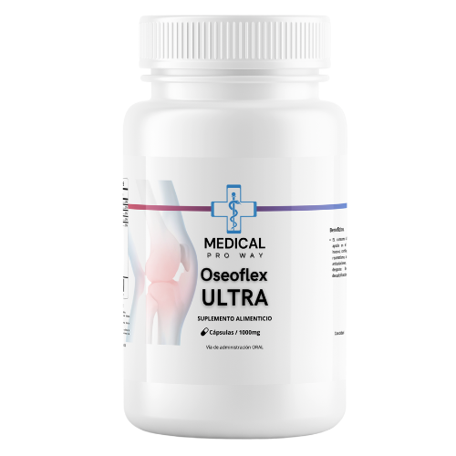